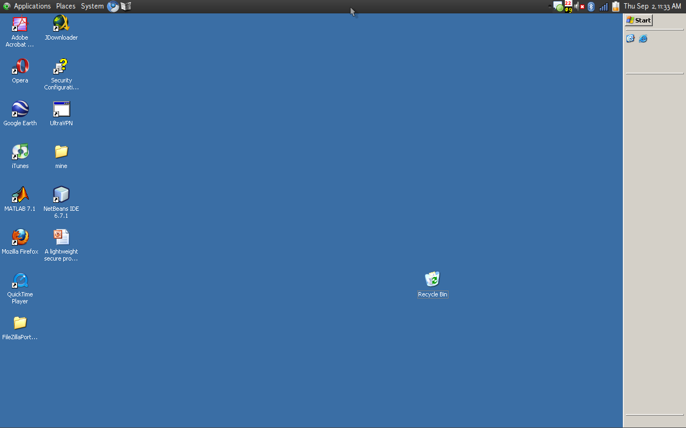

To answer this question, it was easy. Long title, but short way to solve it. The way called "Remote". Remote is controlling other operating system eventhough different operating systems. Well, just similar with remoting your television.
Ok how?
Windows can be remoted by using Remote Desktop Protocol (RDP). This protocols is design to communicate other OS with Microsoft Windows Machine. To use remote with this protocol on GNU/Linux, use tiny apps but awesome called "rdekstop". Just like following screenshoot.
But how to get this stuff?. Here the magic command
Afer it finished, use with command :
i.e, we want remote computer with IP 192.168.2.2, then use :
If you want to display fullscreen, just use this command
and voila, you can help your boss windows directly from your desk.
More about RDP here, and more about rdekstop here.
You know what, tell me what you did with your boss computer?